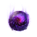

М'рен
Предметы / Универсальные орбы
Открыть в интерактивной вики →
| Эффект | Сокращение расхода заряда снаряжения |
|---|---|
| Суб-орб | 10 |
| Би-орб | 13 / 13.6 / 14.5 |
| Магни-орб | 17 / 18.4 / 20.5 |
| Архи-орб | 25 / 28 / 32.5 |

Открыть в интерактивной вики →
| Эффект | Сокращение расхода заряда снаряжения |
|---|---|
| Суб-орб | 10 |
| Би-орб | 13 / 13.6 / 14.5 |
| Магни-орб | 17 / 18.4 / 20.5 |
| Архи-орб | 25 / 28 / 32.5 |